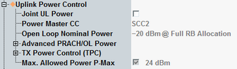

At the highest level of the "Uplink Power Control" node, some general power control settings are available.

The parameter "Joint UL Power" is only available, if at least one SCC uplink is enabled.
- Enabled: The power of all uplinks is controlled via the PCC settings. All uplinks have the same power.
- Disabled: The power of at least one uplink can be controlled independently of the other uplinks.
Whether two uplinks can be controlled independently, depends for example on the distance of the uplink frequencies. If all uplinks must have the same power, the parameter "Joint UL Power" is enabled and grayed out. Otherwise, it is configurable.
If the UL power of a carrier cannot be controlled independently, the dependent uplink power control settings of that carrier are grayed out and show the master settings. The parameter "Power Master CC" displays which carrier is used as master.
Remote command:Specifies the maximum allowed output power for the UE in the cell. The UE output power must not exceed this value. And it must not exceed the maximum power value resulting from the UE power class.
If the checkbox is enabled, the configured value is signaled to the UE within the system information. If it is disabled, the parameter has no effect.
Remote command: